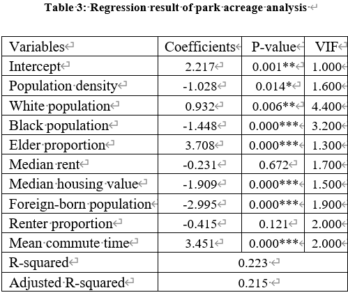
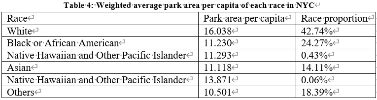
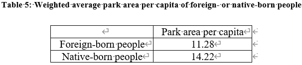
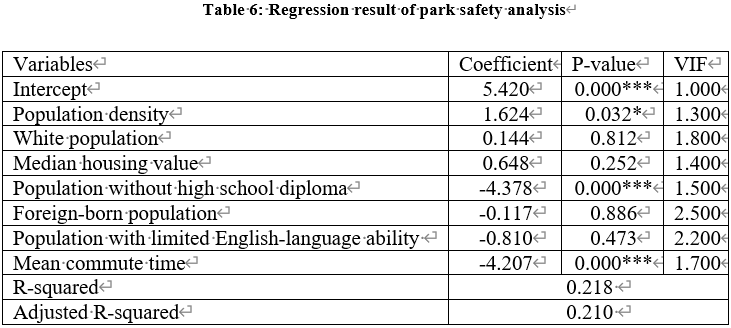

Result
Analysis of Park Acreage
Figure 12 is the result of the CEDS population estimation. Most tax lots with a large number of people are located in Manhattan or are exceptionally large.

Figure 13 shows the result of the 2SFCA method on the lot level. All lots were quantile classified based on their park area per capita, except gray lots with 0 park area per capita.

The obvious disparities in park acreage of lots in different areas shows some facts. 1) As for the gray lots far from parks, there are almost none in Manhattan, many in Queens, and a few in the other three boroughs. It shows that park coverage in Manhattan is the best, while it is the worst in Queens. 2) Along with the signal of the gray lots, Brooklyn and Queens also showcased several yellow lots surrounding the park. which implies that these are densely populated areas with undersized parks. 3) Lower Manhattan and northern Brooklyn have a series of nearby small parks that are not particularly large, which keep the overall park acreage in these areas moderate, suggesting that the role of a dense enough network of small parks in enhancing park acreage should be taken into account. 4) According to descriptive statistics, the mean of park area per capita in New York City is approximately 13.11 square meters, while the median is approximately 1.72 square meters. The average is well above the median, as is to be expected, as many extremely large parks will raise the park area per capita of nearby lots. 5) Park area per capita vary widely in different boroughs. From largest to smallest, the average park area per capita (square meters per person) is 61.48 in Staten Island, 18.54 in Bronx, 11.54 in Queens, 8.34 in Brooklyn, and 5.71 in Manhattan.

Figure 14 is the result of park area per capita of each census tract by weighted average method. Some remarkable disparities in small scales are smoothed out on a larger scale. It shows that the border of the city and Staten Island both show extremely high park area per capita. Since there is a smaller population and larger parks, this leads to higher acreage.
With the help of the LASSO regression algorithm, the optimal regression result is shown in Table 3. The independent variables that do not appear in the table were dropped by the LASSO algorithm. All variance inflation factors (VIF) of independent variables are lower than 5.0, meaning there is no critical multicollinearity.
(***p = 0.001, **p = 0.01, *p = 0.05)
After conducting a LASSO regression of park acreage, park area per capita will significantly increase with an increase of three variables—the White population, senior population, and mean commute time—while the other four variables—population density, Black population, median housing value, and foreign-born population—have the opposite effect.


For the independent variables with a p-value lower than 0.05, four of them do not demonstrate an inequity issue. Two of them are proxy explanations for the location of census tracts. Figure 15 shows that the median housing value of census tracts is higher in downtown Manhattan or Brooklyn, while it is lower on the border of New York City. Considering that park acreage tends to be higher on the border of the city, the negative relationship between median housing value and park area per capita could be explained as geographic similarity instead of absolute inequity. Figure 16 shows the mean commute time of census tracts is lower in downtown Manhattan or Brooklyn, while it is higher on the border of New York City. Considering that park acreage tends to be higher on the border of the city, the positive relationship between median housing value and park area per capita could be interpreted as geographic similarity instead of absolute inequity as well. Then, the positive coefficients between senior populations and park acreage indicate that neighborhoods with more senior people tend to have larger park area per capita. Vulnerable people with access to more park acreage don’t experience inequity. As for population density, it makes sense that neighborhoods with dense populations have less park area per capita. Thus, the negative association between population density and park crime density is unsurprising.
However, the coefficients of the White and Black populations show a significant inequity of park acreage from a racial perspective. It shows that as other variables are controlled, the increase of the White population tends to produce more park area per capita, while the increase of the Black population might decrease park area per capita. To explore this result one step further, the weighted average park area per capita by race is listed below. Table 4 shows that the White population has access to significantly more park area per capita. Even if other race variables are dropped by the LASSO algorithm because of multicollinearity, minorities tend to have less park space per capita, significantly less for the Black or African American population. The negative coefficient of the foreign-born population shows significant inequity in park acreage as well. Table 5 is the weighted average park area per capita of foreign- or native-born people. It confirms that foreign-born people have significantly less park area per capita.
 Analysis of Park Safety
Here is the result of the park crime density measurement of tax lot level. As Figure 17 shows, not all tax lots are near parks with high crime density. Many lots with high park crime density are in Manhattan, along Ocean Avenue in Brooklyn, in the peninsula in southern Queens, and around Flushing Meadows Corona Park in Queens.

Figure 18 is the result of average weight, showing the park safety of each census tract. The census tracts of Manhattan and southern Queens show markedly worse park safety.

The optimal regression result is shown in Table 6. The independent variables that do not appear in the table were dropped by LASSO regression. All VIF of independent variables are lower than 5.0, meaning there is no critical multicollinearity.
(***p = 0.001, **p = 0.01, *p = 0.05)
The LASSO regression analyses were conducted using park crime density as the dependent variable. One variable, population density, is associated with a higher park crime density, while two variables, population without high school diploma and population with longer commute time, are associated with lower park crime density.
This research cannot find significant inequity in park safety. There are three independent variables with p-value less than 0.05 that can significantly influence the park crime density. One could be interpreted by reason out of inequity. According to previous studies, crime rates are higher in population-dense areas (Skogan 1977). Thus, the positive association between population density and park crime density is unsurprising. The negative coefficients of the two independent variables indicate that neighborhoods with lower education or longer-distance commuters tend to have lower crime density parks, or in other word, safer parks. The two vulnerable groups do not experience inequity in access to better safety parks.